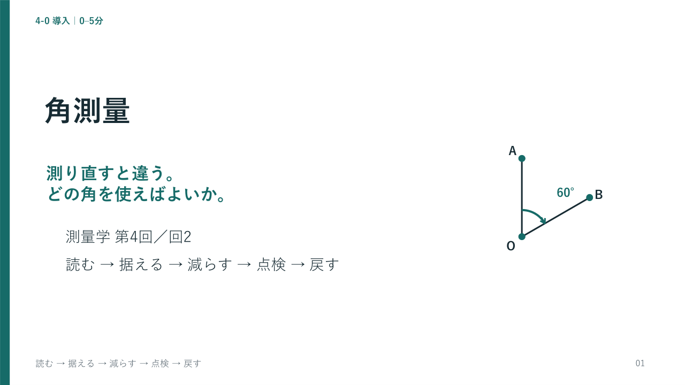

<!doctype html><html lang="ja"><meta charset="utf-8"><meta name="viewport" content="width=device-width,initial-scale=1"><title>角測量 回2｜授業スライド</title><style>body{margin:0;color:#182b33;background:#eef2f3;font:17px/1.6 "Yu Gothic",Meiryo,sans-serif}header,footer{padding:12px 22px;background:white}header{display:flex;gap:16px;align-items:center;flex-wrap:wrap}h1{font-size:19px;margin:0}button,select{font:inherit;padding:7px 12px;max-width:100%;border:1px solid #78918f;background:white;color:#166b68}button{cursor:pointer}button:disabled{color:#888;cursor:default}:focus-visible{outline:3px solid #b65b00;outline-offset:3px}main{max-width:1280px;margin:12px auto}img{width:100%;height:auto;display:block;background:white}details{padding:16px 24px;background:white}summary{cursor:pointer;color:#166b68}#notes{white-space:pre-line}a{color:#166b68}.hint{font-size:14px}select{width:430px}@media print{header,footer,details{display:none}body{background:white}main{margin:0}}</style><header><h1>第4回 角測量「回2」</h1><button id="prev" aria-label="前のスライド">← 前</button><button id="next" aria-label="次のスライド">次 →</button><select id="jump" aria-label="ページ選択"></select><label><input id="appendix" type="checkbox">付録を含める</label><button id="full">全画面</button></header><main><details><summary>発表者ノート</summary><p id="notes"></p></details></main><footer><span id="count" aria-live="polite"></span><p class="hint">← → またはPageUp / PageDownで移動。付録は解答を含みます。画像フォルダー preview_回2 を一緒に保存してください。</p><a href="slides_回2.pptx">PowerPoint</a> ／ <a href="slides_回2.pdf">本編PDF</a> ／ <a href="explanation_回2.html">解説HTML</a></footer><script>const data=[{"id": 1, "title": "角測量", "notes": "本時は同じ2本の杭の角をどう採用するかを考えます。1つの値を読むことから、採用できる観測かを判断することへ進みます。導入全体は5分です。\n教材の例と許容値は授業用の架空設定。", "section": "4-0 導入｜0–5分"}, {"id": 2, "title": "前回①：符号で象限を決める", "notes": "第3回の問1を1分で振り返ります。方向角は座標北から時計回りであり、電卓の53°をそのまま使うと北東になってしまいます。順計算はX_C=1373.205 m、Y_C=900.000 mでした。\n教材の例と許容値は授業用の架空設定。", "section": "4-0 導入｜0–5分"}, {"id": 3, "title": "前回②：距離は順に換算する", "notes": "第3回問2の値と換算の順だけを1分で確認します。斜距離500.020 m、高低差4.500 m、標高200 m、R=6370 km、縮尺係数0.9999の設定です。ここで距離観測の追加講義はしません。\n教材の例と許容値は授業用の架空設定。", "section": "4-0 導入｜0–5分"}, {"id": 4, "title": "同じ杭なのに、どちらを使う？", "notes": "まだ答えを確定せず、学生に選ぶか平均するかを短く考えてもらいます。この2つだけでは反の結果と点検基準がなく採否を決められません。最後に同じ問いへ戻ります。\n教材の例と許容値は授業用の架空設定。", "section": "4-0 導入｜0–5分"}, {"id": 5, "title": "計算の先に、採用する判断がある", "notes": "読む、据える、正反で誤差を減らす、点検する、中心へ戻すの順に進みます。演習では方向法の採否と偏心の復元を自分で判断します。各ページ上部に今いる節名を示します。\n教材の例と許容値は授業用の架空設定。", "section": "4-0 導入｜0–5分"}, {"id": 6, "title": "目盛の0°は、座標北とは限らない", "notes": "時計の文字盤を回しても2本の針の間の角は変わりません。同様に器械の初期目盛と北方向を区別します。図のOAは北を意味せず、基準方向です。\n教材の例と許容値は授業用の架空設定。", "section": "4-1 読む｜5–11分"}, {"id": 7, "title": "初期目盛が変わっても、差は同じ", "notes": "2つの読みの差に注目させます。異なる初期目盛で同じ角が得られることが、対回の目盛変更を理解する土台になります。\n教材の例と許容値は授業用の架空設定。", "section": "4-1 読む｜5–11分"}, {"id": 8, "title": "角の繰り上がりは60ごと", "notes": "秒を先に繰り上げ、その1分を分の列へ加えます。100進法の小数として計算しないよう確認し、困ったら全て角秒に直す方法をノートで補います。\n教材の例と許容値は授業用の架空設定。", "section": "4-1 読む｜5–11分"}, {"id": 9, "title": "360°をまたぐ差には、一周を足す", "notes": "A350°から0°まで10°、さらにB20°まで20°と図で追います。角の向きを右回りに統一し、負の値のままにしません。\n教材の例と許容値は授業用の架空設定。", "section": "4-1 読む｜5–11分"}, {"id": 10, "title": "同じ点なら、既知の向きに足せる", "notes": "同じ器械点Oから見た方向同士だから足せます。方向角の基準は座標北、水平角の基準はOAです。器械点を移す場合との違いを最後に扱います。\n教材の例と許容値は授業用の架空設定。 360°以上になったら360°を引き、0°以上360°未満に直します。", "section": "4-1 読む｜5–11分"}, {"id": 11, "title": "確認①：読みと角を区別する", "notes": "20秒考えてもらい、30°と答え合わせします。誤答が多ければ円を指でたどり、差が負なら1周を足す操作を再確認します。\n教材の例と許容値は授業用の架空設定。", "section": "4-1 読む｜5–11分"}, {"id": 12, "title": "3つの軸が、向きを支える", "notes": "視準軸は望遠鏡が見る線、水平軸は望遠鏡を上下に回す軸、鉛直軸は器械を左右に回す軸です。図は3次元の投影なので見かけの角が90°でなくても、空間での直交を示しています。\n教材の例と許容値は授業用の架空設定。", "section": "4-2 据える｜11–18分"}, {"id": 13, "title": "求心は、測点の真上へ合わせる", "notes": "正常と求心ずれを比較します。器械を水平にしただけでは測点の真上にならず、位置の確認が必要です。\n教材の例と許容値は授業用の架空設定。", "section": "4-2 据える｜11–18分"}, {"id": 14, "title": "整準は、鉛直軸を鉛直にする", "notes": "求心との違いを学生に言ってもらいます。位置と傾きは互いに調整で変わり得るので、どちらも再確認します。\n教材の例と許容値は授業用の架空設定。", "section": "4-2 据える｜11–18分"}, {"id": 15, "title": "視差は、目を動かすと見つかる", "notes": "十字線と目標像の両方が同じ焦点面にあるかを確認します。単に目標が鮮明に見えるだけで終えず、目を少し動かして視差を検出します。\n教材の例と許容値は授業用の架空設定。", "section": "4-2 据える｜11–18分"}, {"id": 16, "title": "確認②：平均で据付のずれは直る？", "notes": "求心ずれと鉛直軸の傾きを区別できるか確かめます。「後の計算で絶対に直せない」とは言わず、「正反平均では消えない」と限定します。既知の偏心や作動範囲内の傾き補正を後で扱います。\n教材の例と許容値は授業用の架空設定。", "section": "4-2 据える｜11–18分"}, {"id": 17, "title": "正と反で、同じ目標を見直す", "notes": "左右は同じ器械点の異なる姿勢を並べた図です。反の読みがおよそ180°違うのは姿勢の違いです。方向法では正反別に零方向を引くので、主計算で別途180°換算を重ねません。\n教材の例と許容値は授業用の架空設定。", "section": "4-3 減らす｜18–29分"}, {"id": 18, "title": "視準軸のずれは、反転で向きが逆になる", "notes": "図の角を誇張しています。ここでは正反で符号が反転する成分だけのモデルを示しており、器械の全ての誤差を一つのcで代表していません。\n教材の例と許容値は授業用の架空設定。", "section": "4-3 減らす｜18–29分"}, {"id": 19, "title": "反対符号の成分は、平均で相殺する", "notes": "反は180°を直した同一方向の説明用モデルです。これは方向法野帳の結果p・qの較差を器械誤差と同一視する説明ではありません。HTMLでは共通のずれを変えて確かめられます。\n教材の例と許容値は授業用の架空設定。", "section": "4-3 減らす｜18–29分"}, {"id": 20, "title": "正反観測で軽減するのは、この3つ", "notes": "R4測量士補No.5の記述を参照しています。水平目盛盤の偏心は求心ずれとは異なり、対向読み・正反観測で軽減できる成分です。\n教材の例と許容値は授業用の架空設定。", "section": "4-3 減らす｜18–29分"}, {"id": 21, "title": "目盛盤の偏心と、求心ずれは別物", "notes": "2つの中心が器械内部でずれる場合を図で示します。地面の測点から器械がずれる求心誤差と区別します。鉛直軸の傾きは姿勢を反転しても重力方向へ戻りません。\n教材の例と許容値は授業用の架空設定。", "section": "4-3 減らす｜18–29分"}, {"id": 22, "title": "試験の型：正反で軽減できないもの", "notes": "答えは鉛直軸の傾きです。R4No.5の内容に基づく確認で、問題全文の転載ではありません。理由を姿勢の反転と傾きの違いから説明します。\n教材の例と許容値は授業用の架空設定。", "section": "4-3 減らす｜18–29分"}, {"id": 23, "title": "確認③：そろったら、正しいと言える？", "notes": "共通成分があれば平均にも残ると答えます。以降の点検は観測の整合性を調べるもので、真値への近さを全て証明するものではありません。\n教材の例と許容値は授業用の架空設定。", "section": "4-3 減らす｜18–29分"}, {"id": 24, "title": "同じ点から、複数の方向を1対回測る", "notes": "図は目標の配置を示します。今回の簡略野帳では帰零の列は省略し、実務で不要だとは言いません。観測順と記録方法は適用する方法に従います。\n教材の例と許容値は授業用の架空設定。", "section": "4-4 点検｜29–43分"}, {"id": 25, "title": "第1対回：読んだ値を、そのまま残す", "notes": "正と反のAを別々に指で示します。表は同じ目標を横に並べたもので、実際の時系列とは限りません。読定値を後から都合よく書き換えないことも確認します。\n教材の例と許容値は授業用の架空設定。", "section": "4-4 点検｜29–43分"}, {"id": 26, "title": "正と反で、それぞれAを引く", "notes": "生読定r/lと零方向差引き後の結果p/qを区別します。両方に含まれる180°はこの引き算で消え、負になったときだけ360°を加えます。\n教材の例と許容値は授業用の架空設定。", "section": "4-4 点検｜29–43分"}, {"id": 27, "title": "足して倍角、引いて較差", "notes": "p=73°25′15″、q=73°25′11″を使います。半分にした角を先に丸めず、倍角と較差を保持して点検へ進みます。\n教材の例と許容値は授業用の架空設定。", "section": "4-4 点検｜29–43分"}, {"id": 28, "title": "較差は「器械の狂いの2倍」ではない", "notes": "反例は正A10°00′05″・B70°00′05″、反A189°59′55″・B249°59′55″です。正反の結果はともに60°で較差0″になります。較差は2目標間の誤差成分の違いを含む量で、絶対的な器械誤差そのものではありません。\n教材の例と許容値は授業用の架空設定。", "section": "4-4 点検｜29–43分"}, {"id": 29, "title": "第2対回も、Aを別々に引く", "notes": "正の結果は73°25′09″、反の結果は73°25′11″です。第1対回との比較で正だけを見るのではなく、両方から倍角と較差を計算します。\n教材の例と許容値は授業用の架空設定。", "section": "4-4 点検｜29–43分"}, {"id": 30, "title": "同じ方向の、対回間の差を点検する", "notes": "倍角差は26−20=6″、観測差は(+4)−(−2)=6″です。較差Cそのものではなく、同じ方向のCの最大最小の差を求めます。\n教材の例と許容値は授業用の架空設定。", "section": "4-4 点検｜29–43分"}, {"id": 31, "title": "点検に通ってから、平均を採用する", "notes": "各対回の角は73°25′13″と73°25′10″、平均は73°25′11.5″です。これは計算上の桁で、器械の読定分解能が上がったわけではありません。超過した場合は採用せず原因確認と再測です。\n教材の例と許容値は授業用の架空設定。", "section": "4-4 点検｜29–43分"}, {"id": 32, "title": "試験の型：較差の符号と繰り下がり", "notes": "R2No.5型の方向法野帳で使う計算の要点です。この97°46′02″の表記は繰り下がりの説明例であり、講義Bの値ではありません。Dの差とD/2の差を取り違えないよう確認します。\n教材の例と許容値は授業用の架空設定。", "section": "4-4 点検｜29–43分"}, {"id": 33, "title": "確認④：−4″から＋4″までの幅は？", "notes": "正答は8″です。最大−最小であり平均ではないことを確認します。超過時は原因を確認して必要な関連観測を含め所定の範囲を再測し、数値の書換えはしません。\n教材の例と許容値は授業用の架空設定。", "section": "4-4 点検｜29–43分"}, {"id": 34, "title": "天頂角90°が、水平を意味する", "notes": "同じ目標を2つの基準から表すだけです。天頂角が90°より小さいなら目標は水平より上なので、αが正になると図で確かめます。\n教材の例と許容値は授業用の架空設定。 高度角は高低角とも呼びます。", "section": "4-5 縦の角｜43–49分"}, {"id": 35, "title": "高度定数Kは、正反の和のずれ", "notes": "鉛直の読定はz正とz反で示し、水平の結果p/qと混ぜません。この教材のKは和のずれ全体です。対称な指標誤差モデルで各面に現れる成分はK/2ですが、K自体を勝手に半分にしません。\n教材の例と許容値は授業用の架空設定。", "section": "4-5 縦の角｜43–49分"}, {"id": 36, "title": "高度定数は、目標間のそろい方も見る", "notes": "Kの較差は6″です。ここでは較差という点検量を学びますが、Kそのものの器械点検・調整が不要という意味ではありません。実際の許容値は適用規程に従います。\n教材の例と許容値は授業用の架空設定。", "section": "4-5 縦の角｜43–49分"}, {"id": 37, "title": "確認⑤：真上と水平を取り違えない", "notes": "正答はK10″、Z85°10′15″、α4°49′45″です。計算が止まる場合はz正−z反＋360°＝170°20′30″を先に出し、2で割ります。高度定数Kを半分の値として報告することとは区別します。", "section": "4-5 縦の角｜43–49分"}, {"id": 38, "title": "中心で測れないとき、ずらして観測する", "notes": "どちらも知らないずれを正反平均で取り除くものではありません。主説明では器械点の偏心を直角三角形で扱い、一般の標点偏心は補足へ分けます。\n教材の例と許容値は授業用の架空設定。", "section": "4-6 戻す｜49–56分"}, {"id": 39, "title": "デモ：Oで90°でも、Eでは広がる", "notes": "この図はOが直角です。Oの北にA、東にEとBがあり、EからAは北より少し左へ見えるので時計回りのA→B角が大きくなります。OEは誇張しています。\n教材の例と許容値は授業用の架空設定。", "section": "4-6 戻す｜49–56分"}, {"id": 40, "title": "逆正接は、比から角を求める操作", "notes": "tan⁻¹は1/tanではありません。0.5729386977×60=34.376321862分、その小数部分×60=22.57931172秒です。最後に0.1秒へ丸めます。\n教材の例と許容値は授業用の架空設定。", "section": "4-6 戻す｜49–56分"}, {"id": 41, "title": "補正の符号は、図で先に予想する", "notes": "デモでは中心の角もOAも既知なので、補正の向きが図から分かります。演習は直角の場所を変えるため、ここで覚えた負号をそのまま写さないよう予告します。\n教材の例と許容値は授業用の架空設定。", "section": "4-6 戻す｜49–56分"}, {"id": 42, "title": "確認⑥：ずれが2倍なら、角は？", "notes": "正答は約2倍、約半分、EAです。厳密には逆正接の関係であり、比例はe/Sが小さいときの感覚だと補います。ラジアンやρの換算はここへ追加せず補足へ送ります。\n教材の例と許容値は授業用の架空設定。", "section": "4-6 戻す｜49–56分"}, {"id": 43, "title": "自動視準と二軸補正が、作業を助ける", "notes": "自動機能は視準や微小傾きの補正を助けます。補正範囲や機能は機種に依存するため取扱説明書に従い、特定機種の数値を一般化しません。\n教材の例と許容値は授業用の架空設定。", "section": "4-7 TS｜56–58分"}, {"id": 44, "title": "採用する判断は、人が確かめる", "notes": "表示された数値を採用できるかを判断するところまでが観測です。58分で説明を終え、58–60分は遅れの吸収と演習準備に使います。60分から演習25分を確保してください。\n教材の例と許容値は授業用の架空設定。", "section": "4-7 TS｜56–58分"}, {"id": 45, "title": "演習1：15分で、方向法を点検する", "notes": "問1は6点です。配布の第1対回Bは記入例なので、第2対回BとCの各対回を計算します。5分経過時にp/qを出せているか確認し、停滞している学生にはAを各面で別々に引くところだけ支援します。\n教材の例と許容値は授業用の架空設定。", "section": "4-8 演習｜60–85分"}, {"id": 46, "title": "第2対回：仮基準で採否を決める", "notes": "基準ちょうどは範囲内です。Cの反は43°32′44″−275°00′16″に360°を加える必要があります。採用できない方向について平均を成果にせず、理由と再測を答えさせます。\n教材の例と許容値は授業用の架空設定。", "section": "4-8 演習｜60–85分"}, {"id": 47, "title": "演習2：Eでの観測を、Oへ戻す", "notes": "演習ではEが直角で中心Oの角は未知です。時計回りA→BのE観測角は90°。電卓がなければtan⁻¹(1/100)=0.5729386977°を板書し、90°から引くことと三平方の定理は学生自身に判断させます。\n教材の例と許容値は授業用の架空設定。", "section": "4-8 演習｜60–85分"}, {"id": 48, "title": "読み→結果→点検→採用をつなぐ", "notes": "1.5分で式の役割だけを整理します。p/qは正反の結果で、生読定r/lではないと確認します。倍角差と観測差、Kの較差は何を比較するかを思い出させ、追加公式をここで展開しません。\n教材の例と許容値は授業用の架空設定。", "section": "4-9 まとめ｜85–90分"}, {"id": 49, "title": "次の杭では、後視が180°反転する", "notes": "1.5分で次回へ橋渡しします。40+100=140°ではなく、今いるBからAを振り返った方向220°に足すのが要点です。繰り返しの座標計算は第5回で行います。\n教材の例と許容値は授業用の架空設定。", "section": "4-9 まとめ｜85–90分"}, {"id": 50, "title": "出口：どの角を使うか、理由で答える", "notes": "2分で回答を聞きます。正答は反の結果、観測条件、許容値が必要です。講義の反の結果はいずれも73°25′11″で、倍角差6″・観測差6″が仮基準内なので平均73°25′11.5″を採用します。本編はここで終わり、付録は通常非表示です。\n教材の例と許容値は授業用の架空設定。", "section": "4-9 まとめ｜85–90分"}, {"id": 51, "title": "問1解答：正反別に零方向を引く", "notes": "第2対回反Cは43°32′44″+360°−275°00′16″=128°32′28″です。ここを一周足さずに処理すると以降の点検が崩れるので、途中式を確認します。\n教材の例と許容値は授業用の架空設定。", "section": "付録A 演習解答｜標準90分の外"}, {"id": 52, "title": "問1解答：倍角と較差を残す", "notes": "第1対回Cでは分が64分になるので257°04′36″へ繰り上げます。第2対回Cの較差は−4″であり、符号を残して観測差を計算します。\n教材の例と許容値は授業用の架空設定。", "section": "付録A 演習解答｜標準90分の外"}, {"id": 53, "title": "問1解答：Bは採用、Cは再測", "notes": "Cの観測差8″は境界内ですが、倍角差16″が超過します。Cの平均を採用せず、零方向など必要な関連観測も含め適用方法に従って再測します。B平均は62°14′15.5″です。\n教材の例と許容値は授業用の架空設定。", "section": "付録A 演習解答｜標準90分の外"}, {"id": 54, "title": "問2解答：Eが直角だから、90°から引く", "notes": "OからAへの方向はEからAより右へ傾くので、Aから東向きBへの開きは小さくなります。角補正は−0°34′22.6″です。\n教材の例と許容値は授業用の架空設定。", "section": "付録A 演習解答｜標準90分の外"}, {"id": 55, "title": "問2解答：OAが斜辺なので、距離は増える", "notes": "デモではEAが斜辺で、演習ではOAが斜辺です。符号を暗記せず、どちらが長いかを図から判断できたかを評価します。\n教材の例と許容値は授業用の架空設定。", "section": "付録A 演習解答｜標準90分の外"}, {"id": 56, "title": "採点：計算だけでなく判断にも点を置く", "notes": "詳細は別紙解答を使います。問1はp/q2点、D/C1点、点検量1点、B平均0.5点、B/Cの判断1.5点。問2は中心角1.5点、OA1点、補正の符号と量1.5点です。\n教材の例と許容値は授業用の架空設定。", "section": "付録A 演習解答｜標準90分の外"}, {"id": 57, "title": "1秒のずれは、100m先で約0.485mm", "notes": "実際の数値を式から検算しています。角度と距離の役割をつなげる補足であり、授業が遅れたときに本編へ追加しません。\n教材の例と許容値は授業用の架空設定。", "section": "付録B 補足｜標準90分の外"}, {"id": 58, "title": "初期目盛を変え、円の別の部分を使う", "notes": "同じ目標方向を見たまま初期目盛を変える意味を示します。目盛盤の偏心と分画誤差を混同せず、正反平均と対回の目盛変更の目的を分けます。\n教材の例と許容値は授業用の架空設定。", "section": "付録B 補足｜標準90分の外"}, {"id": 59, "title": "方向法の「倍角」と、倍角法を区別する", "notes": "同じ倍角という語でも、計算欄の名称と観測方法の名称は別です。本時の演習は方向法であり、倍角法の操作実習まで要求しません。\n教材の例と許容値は授業用の架空設定。", "section": "付録B 補足｜標準90分の外"}, {"id": 60, "title": "ラジアンは、円弧の長さ÷半径", "notes": "ρ″は1radを角秒に直す係数です。e/Sは無次元ですがラジアンの数値として使う小角近似で、度の数値とそのまま混ぜてはいけません。ρ″は問題文の指定に従います。\n教材の例と許容値は授業用の架空設定。", "section": "付録B 補足｜標準90分の外"}, {"id": 61, "title": "斜めの偏心は、直角成分を取り出す", "notes": "S=OE、e=EAです。このφの定義なら補正の符号はsinφと同じです。厳密な方向差はatan2(e sinφ,S+e cosφ)であり、近似式と区別します。異なる配置の器械点偏心の式を無条件に流用しません。\n教材の例と許容値は授業用の架空設定。", "section": "付録B 補足｜標準90分の外"}, {"id": 62, "title": "宿題：指定された近似式で求める", "notes": "前ページの標点偏心の設定を使った架空の宿題です。正答は補正−900″=−15′、T83°05′30″。206265″なら近似補正−928.1925″で異なります。指定の一次近似の答えと厳密幾何の答えは区別します。\n教材の例と許容値は授業用の架空設定。", "section": "付録B 補足｜標準90分の外"}, {"id": 63, "title": "方向角の北は「座標北」", "notes": "図は差を誇張した模式図で、実際の差角は場所によります。本時の方向角は座標北から時計回りに測ると改めて確認します。\n教材の例と許容値は授業用の架空設定。", "section": "付録B 補足｜標準90分の外"}];let i=0;const $=s=>document.getElementById(s);function list(){let n=$('appendix').checked?63:50;$('jump').replaceChildren(...data.slice(0,n).map((d,k)=>{let o=document.createElement('option');o.value=k;o.textContent=d.id+'　'+d.title;return o}));i=Math.min(i,n-1);show()}function show(){let n=$('appendix').checked?63:50,d=data[i];$('slide').src='preview_回2/slide-'+String(d.id).padStart(2,'0')+'.png';$('slide').alt=d.section+'：'+d.title;$('notes').textContent=d.notes;$('jump').value=i;$('count').textContent=(i+1)+' / '+n+'　'+d.section;$('prev').disabled=i===0;$('next').disabled=i===n-1}function step(v){i=Math.max(0,Math.min(($('appendix').checked?63:50)-1,i+v));show()}$('prev').onclick=()=>step(-1);$('next').onclick=()=>step(1);$('jump').onchange=e=>{i=Number(e.target.value);show()};$('appendix').onchange=list;$('full').onclick=async()=>{try{if(document.fullscreenElement)await document.exitFullscreen();else await document.documentElement.requestFullscreen()}catch(e){$('count').textContent='全画面にできません。ブラウザの全画面操作を利用してください。'}};addEventListener('keydown',e=>{if(['SELECT','INPUT','BUTTON','SUMMARY'].includes(document.activeElement.tagName))return;if(['ArrowRight','PageDown'].includes(e.key)){e.preventDefault();step(1)}if(['ArrowLeft','PageUp'].includes(e.key)){e.preventDefault();step(-1)}});list();</script></html>